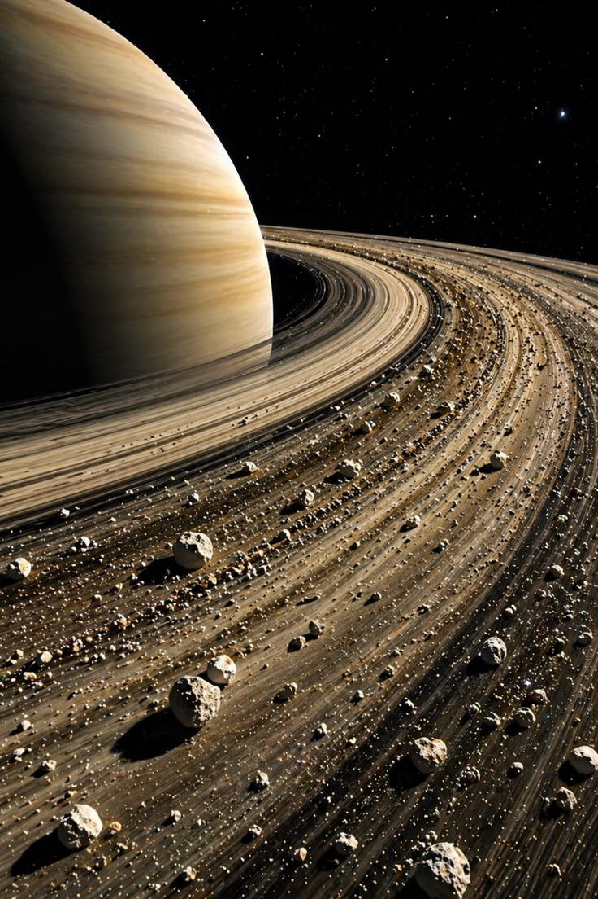

INFORMACIÓN
Los anillos de Saturno rodean al planeta y están divididos en diferentes secciones.
¿Cómo son sus anillos?
Son estructuras muy extensas y delgadas. Se dividen en varios grupos principales, conocidos como anillos A, B y C.
¿De qué están hechos sus anillos?
Están formados principalmente por hielo de agua, polvo y pequeñas cantidades de material rocoso.
¿Cómo se formaron sus anillos?
Una explicación científica propone que podrían ser restos de lunas, cometas u otros cuerpos que se fragmentaron debido a la gravedad de Saturno.